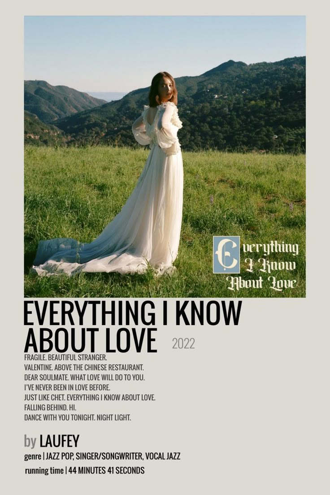
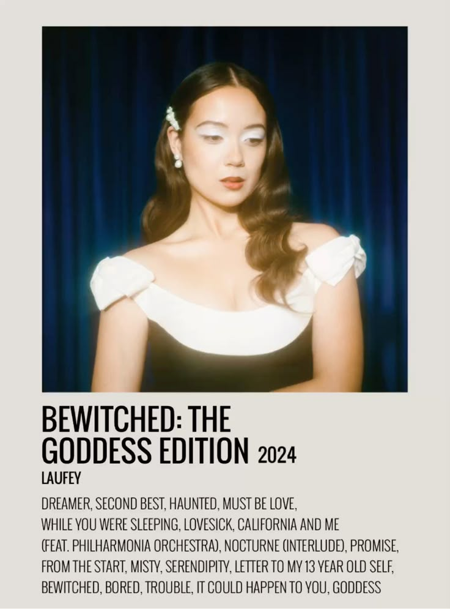
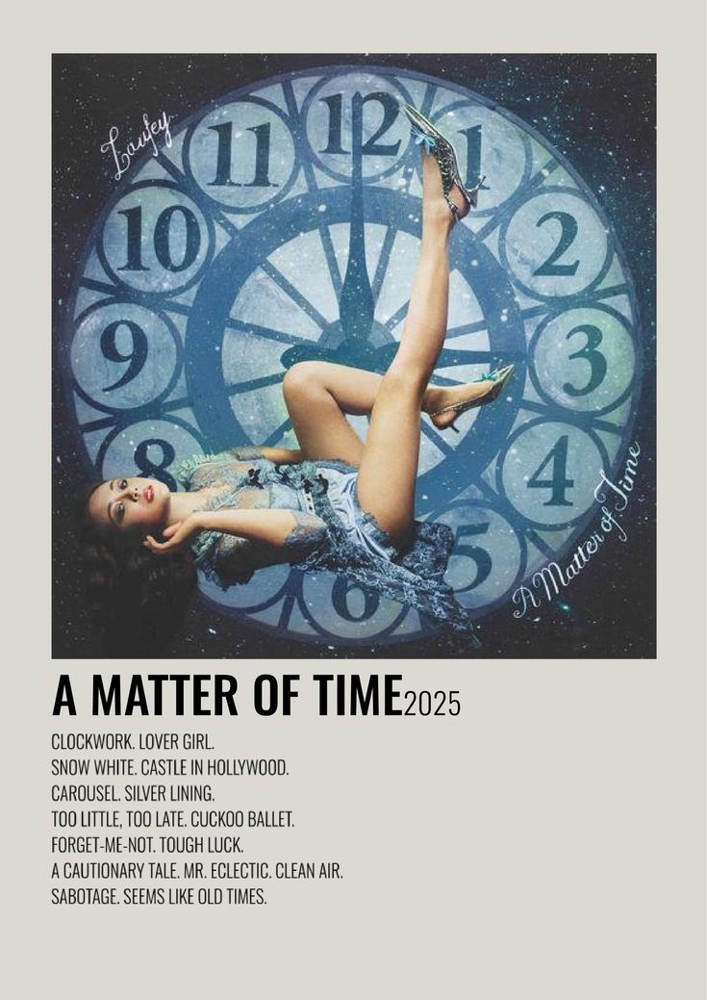
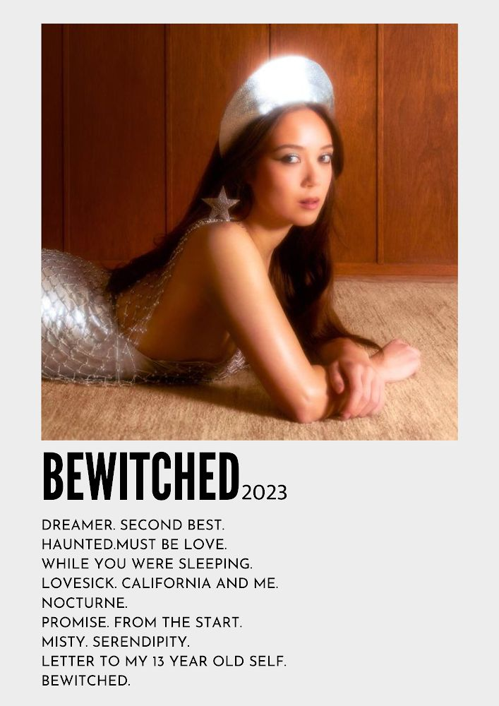

Laufey
🎧˖ . ݁𝜗𝜚. ݁₊
Albums:
Her debut album Everything I Know About Love (2022) introduced her romantic, retro-inspired style. Bewitched (2023) expanded her sound and won a Grammy Award for Best Traditional Pop Vocal Album. In 2024, she released Bewitched: The Goddess Edition, which included additional tracks.
Background & Career:
Born in 1999 in Reykjavík, Iceland, Laufey Lín Jónsdóttir has Icelandic and Chinese heritage. She is classically trained, plays piano and cello, and studied music before rising to popularity through social media and live performances.
Musical Style & Influence:
Her music features soft, expressive vocals with piano, strings, and jazz-influenced arrangements. The lyrics focus on love, nostalgia, and emotional growth, giving her songs a warm, intimate feel.




More Info:
Laufey Foundation